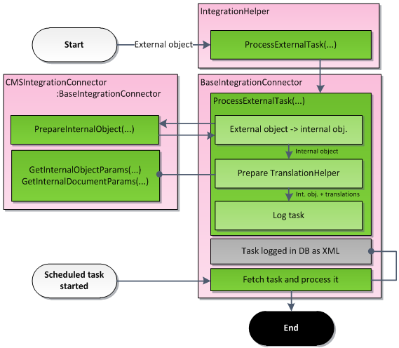
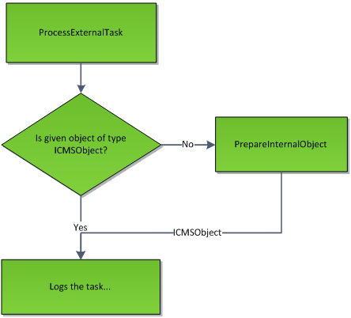

Implementing incoming synchronization
To synchronize data from external applications to Kentico, you need to decide:
which objects and pages you want to synchronize
which data type you want to use
Based on this information, choose which methods to implement in your connector class. Proceed according to the following list:
Call the ProcessExternalTask method to log incoming tasks into the integration task queue. Either call the method in your custom communication service or directly in the code of your external application.
Implement the PrepareInternalObject method in your connector class. The method handles transformations of objects and pages from the external application to Kentico.
Implement one or both of these methods:
GetInternalObjectParams - implement this method if you plan to synchronize objects or pages which have foreign keys referencing objects.
GetInternalDocumentParams - implement this method if you plan to synchronize objects or pages which have foreign keys referencing pages.
(Optional) Call the RequestTasksProcessing method to remotely trigger processing of logged incoming tasks.
Logging incoming tasks
The ProcessExternalTask method logs object or page tasks into the integration task queue. The system then takes the tasks out of the queue and processes them later. The method is available in the IntegrationHelper class.
The location where you need to call the method depends on the approach that you use to communicate between Kentico and the external application:
Kentico API – if your external application has references to your connector class and the Kentico DLLs (i.e. has the Kentico.Libraries NuGet package installed), call the ProcessExternalTask method directly in your application's code.
Custom service – if you use a custom service (Web API, WCF, etc.) to communicate, call the ProcessExternalTask method from the code of the service in the Kentico application.
using CMS.Synchronization;...object externalObject;IntegrationHelper.ProcessExternalTask("CustomConnector", externalObject, IntegrationProcessTypeEnum.Default, TaskTypeEnum.CreateObject, TaskDataTypeEnum.Simple, "SiteCodeName");The method has the following parameters:
connectorName – the code name of the connector which should process the tasks.
obj – the external object which should be processed. If you have managed to prepare ICMSObject earlier, you can pass it as well.
result – this value indicates how the system behaves when fetching the tasks from the database and how it reacts when an error occurs.
taskType – by providing this value, you say whether the provided object or page should be created, updated, deleted, etc.
dataType – indicates, whether the provided object contains child objects. The value also indicates whether the methods for collecting translation information will be called.
siteName – if the processed object belongs to a site, provide a code name of this site.
You can find detailed descriptions of particular enumerations used in the parameters in Enumerations.
Use a reference to the CMS.Synchronization namespace and call this method anywhere in the code of your external application.

The sequence of method calls for each incoming synchronization
Implementing the incoming synchronization
PrepareInternalObject method
Implement the PrepareInternalObject method in your connector class. This method transforms objects from the external application into the corresponding objects or pages in Kentico. The method must return a valid TreeNode page or object inheriting from BaseInfo (UserInfo, RoleInfo, ForumPostInfo etc.).
public override ICMSObject PrepareInternalObject(object obj, TaskTypeEnum taskType, TaskDataTypeEnum dataType, string siteName){ ... return UserInfo;}
Calling of the PrepareInternalObject method
GetInternalObjectParams method
Implement the GetInternalObjectParams method if you need to synchronize objects that have foreign key bindings with other objects in Kentico. Based on the id and objectType parameters, you should be able to find the corresponding object in the external application, and then set the method's out parameters. At the very least you need to supply the object's code name (codeName parameter). The siteName, parentId and groupId parameters allow you to specify the object with more precision. The system then finds the related object in the Kentico database according to the out parameters, and translates the foreign key values.
public override void GetInternalObjectParams(int id, string objectType, out string codeName, out string siteName, ref int parentId, ref int groupId)GetInternalDocumentParams method
Implement the GetInternalDocumentParams method if you need to synchronize objects that have foreign key bindings to pages in Kentico. Based on the id and className parameters, you should be able to find the corresponding page in the external application, and then specify the page's nodeGuid, cultureCode and siteName through the method's out parameters. All of the parameters are mandatory. The system then finds the related page in the Kentico database, and translates the foreign key values.
public override void GetInternalDocumentParams(int id, string className, out Guid nodeGuid, out string cultureCode, out string siteName)Requesting the processing of logged tasks
The BaseIntegrationConnector offers two overloads of the RequestTasksProcessing method:
HttpStatusCode RequestTasksProcessing(string serverUrl)HttpStatusCode RequestTasksProcessing(string serverUrl, string connectorName)Call this method in your connector class. When this method is called, the application makes a HTTP request to the ~/CMSPages/IntegrationNotify.aspx page, which starts the processing of incoming tasks logged in the Kentico project. Each connector will be processed in its own thread.
As a parameter of this method, specify a URL leading to the root of the Kentico application (e.g. http://www.example.com/Kentico). The second overload allows you to also specify the connector whose tasks will be processed. If you do not supply the parameter, all connectors will be processed.